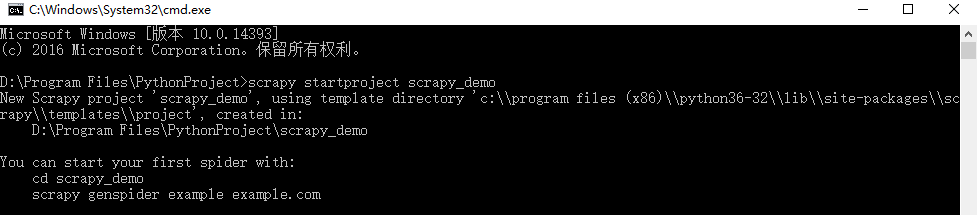
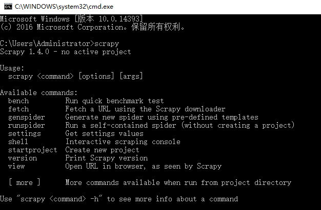
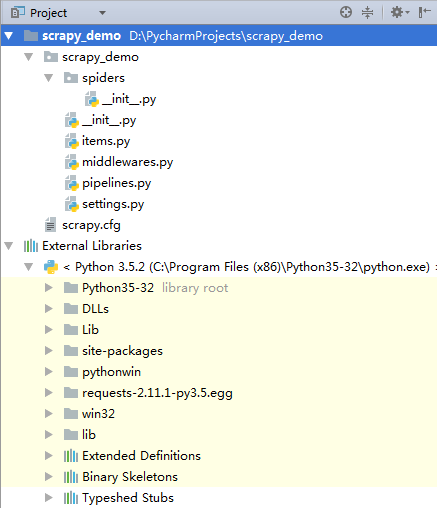

对于规模小、爬取数据量小、对爬取速度不敏感的爬虫程序， 使用 Requests 能轻松搞定。这些爬虫程序主要功能是爬取网页、玩转网页。如果我们需要爬取网站以及系列网站，要求爬虫具备爬取失败能复盘、爬取速度较高等特点。很显然 Requests 不能完全满足我们的需求。因此，需要一功能更加强大的第三方爬虫框架库 —— Scrapy
1.简介 Scrapy
Scrapy 是一个为了方便人们爬取网站数据，提取结构性数据而编写的分布式爬取框架。它可以应用在包括数据挖掘， 信息处理或存储历史数据等一系列的程序中。因其功能颇多，所以学会它需要一定的时间成本。
1-1.Scrapy 的特性
Scrapy 是一个框架。因此，它集一些各功能强大的 python 库的优点于一身。下面列举其一些特性：
- HTML, XML源数据 选择及提取 的内置支持
- 提供了一系列在spider之间共享的可复用的过滤器(即 Item Loaders)，对智能处理爬取数据提供了内置支持。
- 通过 feed导出 提供了多格式(JSON、CSV、XML)，多存储后端(FTP、S3、本地文件系统)的内置支持
- 提供了media pipeline，可以 自动下载 爬取到的数据中的图片(或者其他资源)。
- 高扩展性。您可以通过使用 signals ，设计好的API(中间件, extensions, pipelines)来定制实现您的功能。
- 内置的中间件及扩展为下列功能提供了支持:
- cookies and session 处理
- HTTP 压缩
- HTTP 认证
- HTTP 缓存
- user-agent模拟
- robots.txt
- 爬取深度限制
- 健壮的编码支持和自动识别，用于处理外文、非标准和错误编码问题
- 针对多爬虫下性能评估、失败检测，提供了可扩展的 状态收集工具 。
- 内置 Web service, 使您可以监视及控制您的机器。
1-2.安装 Scrapy
Scrapy 是单纯用 Python 语言编写的库。所以它有依赖一些第三方库，如lxml, twisted,pyOpenSSL等。我们也无需逐个安装依赖库，使用 pip 方式安装 Scrapy 即可。pip 会自动安装 Scrapy 所依赖的库。随便也说下 Scrapy 几个重要依赖库的作用。
- lxml：XML 和 HTML 文本解析器，配合 Xpath 能提取网页中的内容信息。如果你对 lxml 和 Xpath 不熟悉，你可以阅读我之前介绍该库用法的文章。
- Twisted：Twisted 是 Python 下面一个非常重要的基于事件驱动的IO引擎。
- pyOpenSSL：pyopenssl 是 Python 的 OpenSSL 接口。
在终端执行以下命令来安装 Scrapy
1 | pip install Scrapy |
你在安装过程中也许会报出安装 Twisted 失败的错误：
1 | running build_ext |
原因是 Twisted 底层是由 C 语言编写的，所以需要安装C语言的编译环境。对于Python3.5来说，可以通过安装 Visual C++ Build Tools 来安装这个环境。打开上面报错文本中的链接，下载并安装 visualcppbuildtools_full 。等安装完成，再执行 安装 Scrapy 命令。
安装成功之后如下图：

2.初探 Scrapy
2-1.Scrapy 项目解析
Scrapy 新建项目需通过命令行操作。在指定文件夹中，打开终端执行以下命令：
1 | scrapy startproject 项目的名字 |
我新建一个名为 scrapy_demo，执行结果如下。

使用 Pycharm 打开该项目，我们会发现项目的层级架构以及文件。

这些文件的作用是：
scrapy.cfg：项目的配置文件，开发无需用到。scrapy_demo：项目中会有两个同名的文件夹。最外层表示 project，里面那个目录代表 module（项目的核心）。scrapy_demo/items.py：以字段形式定义后期需要处理的数据。scrapy_demo/pipelines.py：提取出来的 Item 对象返回的数据并进行存储。scrapy_demo/settings.py：项目的设置文件。可以对爬虫进行自定义设置，比如选择深度优先爬取还是广度优先爬取，设置对每个IP的爬虫数，设置每个域名的爬虫数，设置爬虫延时，设置代理等等。scrapy_demo/spider： 这个目录存放爬虫程序代码。__init__.py：python 包要求，对 scrapy 作用不大。
2-2.Scrapy 的架构
我们刚接触到新事物，想一下子就熟悉它。这明显是天方夜谭。应按照一定的顺序层次、逐步深入学习。学习 Scrapy 也不外乎如此。在我看来，Scrapy 好比由许多组件拼装起来的大机器。因此，可以采取从整体到局部的顺序学习 Scrapy。下图是 Scrapy 的架构图，它能让我们对 Scrapy 有了大体地认识。后续的文章会逐个介绍其组件用法。

我按照从上而下，从左往右的顺序阐述各组件的作用。
Scheduler：调度器。负责接受 Engine 发送过来的 Requests 请求，并将其队列化；Item Pipeline：Item Pipeline负责处理被spider提取出来的item。其有典型应用，如清理 HTML 数据、验证爬取的数据（检查 item 包含某些字段）、查重（并丢弃）、爬取数据持久化（存入数据库、写入文件等）；Scrapy Engine：引擎是 Scrapy 的中枢。它负责控制数据流在系统中所有组件中流动，并在相应动作发生时触发事件；Downloader Middlewares：下载中间件是 Engine 和 Downloader 的枢纽。负责处理 Downloader 传递给 Engine 的 responses；它还支持自定义扩展。Downloader：负责下载 Engine 发送的所有 Requests 请求，并将其获取到的 responses 回传给 Scrapy Engine；Spider middlewares：Spider 中间件是 Engine 和 Spider 的连接桥梁；它支持自定义扩展来处理 Spider 的输入(responses) 以及输出 item 和 requests 给 Engine ；Spiders：负责解析 Responses 并提取 Item 字段需要的数据，再将需要跟进的URL提交给引擎，再次进入Scheduler(调度器)；
2-3.Scrapy 工作机制
我们对 Scrapy 有了大体上的认识。接下来我们了解下 Scrapy 内部的工作流程。同样先放出一张图，然后我再细细讲解。

当引擎(Engine) 收到 Spider 发送过来的 url 主入口地址（其实是一个 Request 对象, 因为 Scrapy 内部是用到 Requests 请求库），Engine 会进行初始化操作。
Engine 请求调度器（Scheduler），让 Scheduler 调度出下一个 url 给 Engine。
Scheduler 返回下一个 url 给 Engine。
Engine 将 url通过下载中间件(请求(request)方向)转发给下载器(Downloader)。
一旦页面下载完毕，Downloader 生成一个该页面的Response，并将其通过下载中间件(返回(response)方向)发送给 Engine
引擎将从下载器中接收到 Response 发送给Spider处理。
Spider 处理 Response 并返回爬取到的 Item 及新的 Request 给引擎。
Engine 将 Spider 返回的爬取到的 Item 转发给Item Pipeline，顺便也将将 Request 给调度器。
重复（第2步)直到调度器中没有更多地request，引擎关闭该网站。


 - 极客猴&pics=https://s1.ax1x.com/2020/05/15/Ysb90I.jpg&summary=对于规模小、爬取数据量小、对爬取速度不敏感的爬虫程序， 使用 Requests 能轻松搞定。这些爬虫程序主要功能是爬取网页、玩转网页。如果我们需要爬取网站以及系列网站，要求爬虫具备爬取失败能复盘、爬取速度较高等特点。很显然 Requests 不能完全满足我们的需求。因此，需要一功能更加强大的第三方爬虫框架库 —— Scrapy)
 - 极客猴&pics=https://s1.ax1x.com/2020/05/15/Ysb90I.jpg&summary=对于规模小、爬取数据量小、对爬取速度不敏感的爬虫程序， 使用 Requests 能轻松搞定。这些爬虫程序主要功能是爬取网页、玩转网页。如果我们需要爬取网站以及系列网站，要求爬虫具备爬取失败能复盘、爬取速度较高等特点。很显然 Requests 不能完全满足我们的需求。因此，需要一功能更加强大的第三方爬虫框架库 —— Scrapy)
 - 极客猴&pics=https://s1.ax1x.com/2020/05/15/Ysb90I.jpg&summary=对于规模小、爬取数据量小、对爬取速度不敏感的爬虫程序， 使用 Requests 能轻松搞定。这些爬虫程序主要功能是爬取网页、玩转网页。如果我们需要爬取网站以及系列网站，要求爬虫具备爬取失败能复盘、爬取速度较高等特点。很显然 Requests 不能完全满足我们的需求。因此，需要一功能更加强大的第三方爬虫框架库 —— Scrapy)